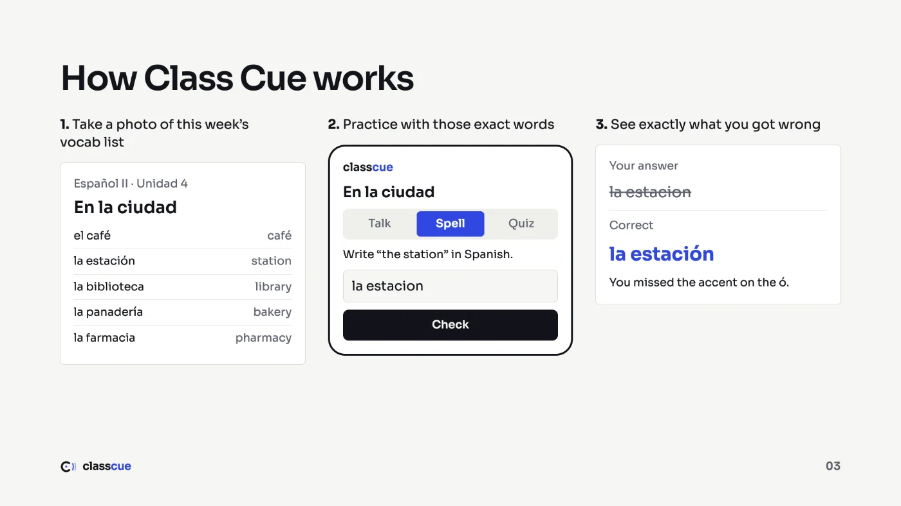

Relevant vocabulary
Practice should follow this week’s class material.
Birds of a Feather · Semester project
Practice what you’re actually learning.
A language-learning concept that turns a student’s own class materials into personalized practice, so studying connects to what happens in the classroom.
Our group focused on a gap between general language practice and the material students need for their next class or quiz. A separate app curriculum can leave students practicing words that do not match their assignments.
Class Cue starts with the student’s own vocabulary list, instead of asking the student to start over in a different curriculum.
Practice should follow this week’s class material.
Vocabulary study also needs listening and speaking practice.
Students need opportunities to use new words in conversation.
Our proposed AI-powered app would turn uploaded materials into listening, speaking, comprehension, and vocabulary exercises for middle and high school language learners.
Take a photo of the vocabulary list from your current class unit.
Use those exact words in talk, spelling, and quiz activities.
See what went wrong, including a missed accent in la estación.

This is a proposed product experience presented in the pitch, rather than a launched application or a tested outcome.
The pitch positions Class Cue around the combination of class-specific content and engaging practice. Our proposed business model gives students a free starting point, adds premium tools for deeper practice, and creates a path toward school licensing.
Practice should adapt to the class, rather than the class adapting to the app.
Free
Basic activities using the student’s class vocabulary.
Premium · proposed ~$36/year
Unlimited uploads, advanced personalization, and progress tracking.
Schools
Classroom licenses for teachers and districts using their own materials.
Develop the upload-to-practice loop and work toward a beta launch.
Introduce free and premium plans and encourage shared class lists.
Expand toward teacher and district licensing.
Pricing, timelines, market sizing, and funding figures in the deck are the group’s pitch assumptions and projections. They are not reported revenue, funding received, or completed milestones.
I was a project team member on Class Cue, contributing to research, ideation, the business model, and the presentation. The product concept and pitch were shared group work.
It was a really fun experience thinking of a product with a team. The project gave me a much clearer idea of how business and product management come into play when creating products.
I came away with a better appreciation for how developing an idea also means thinking about who it serves and how the business could work.
Team presentation: Christian Kim, Sara Gold, Shin Masada, Jamie Hsu, and Sam Willii, as credited in the deck. This portfolio page presents the shared project from my individual perspective.
Browse the original 10-slide group presentation.

01 / 10 · Class Cue